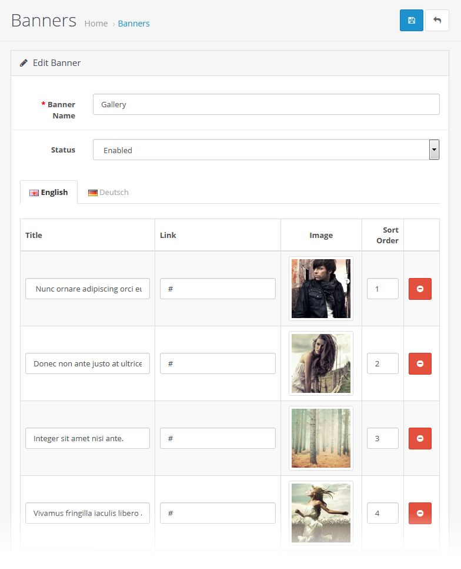
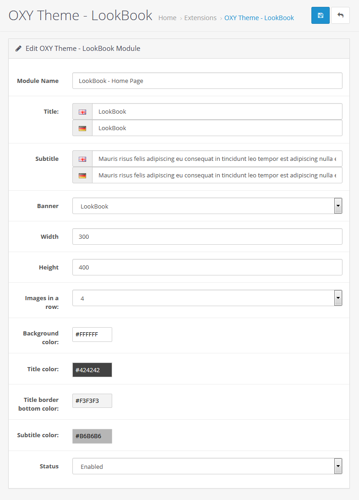
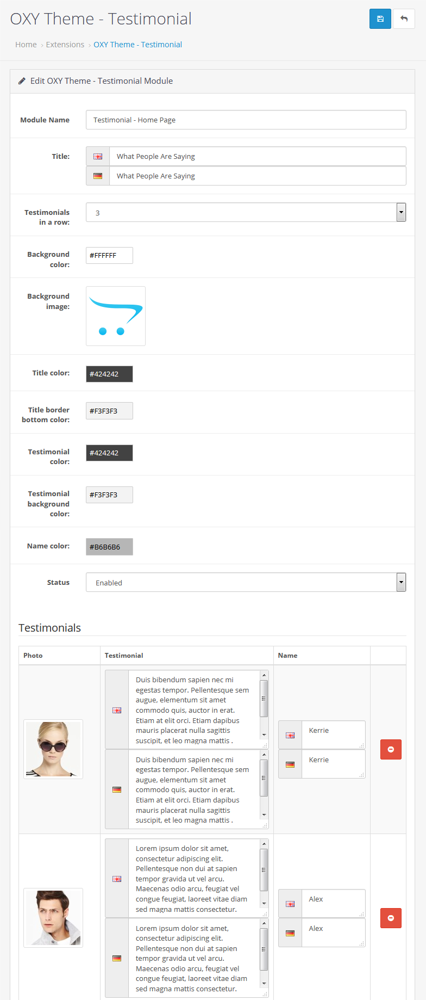
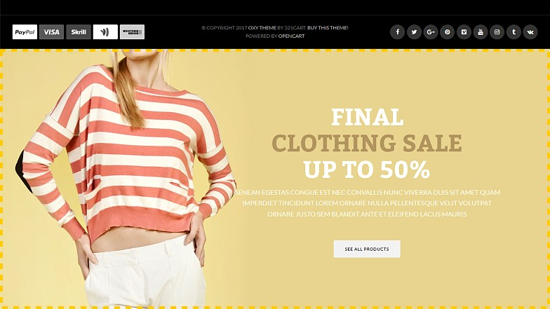

OXY
Modern Multi-Purpose OpenCart Theme
- Created: 06/10/2017
- By: 321cart.com
- http://oxy.321cart.com/landing/
Installation
Before you install this theme:
1. read the complete instruction2. make sure you have installed and running the correct version of OpenCart
3. it is a good practice to backup your system
We recommend to use this theme on a new, clean installation or existing shops without custom core modifications.
---------------------------------------------How to install OXY Theme?
Step 1: Unzip your downloaded "OXY-premium-opencart-theme.zip". There are subfolders structure:
Open the folder that corresponds to your OpenCart version and upload (and overwrite) all the files from "FILES_TO_UPLOAD" to the root directory you have installed OpenCart in.
Step 2: Theme activation
1. Go to OpenCart admin › Extensions › Extensions › select "Themes" from the list › OXY Theme and click "Install".
2. Click on the "Edit" icon.
3. Select "Enabled" from the list, and click "Save".
4. Go to OpenCart admin › System › Settings › Edit › General tab › Theme, select "OXY Store Theme" from the list, and click "Save".
Step 3: General Options module installation
Go to Extensions › Modules › OXY Theme Settings - General Options and click on the 'install' icon:

Then enable the 'OXY Theme Settings - General Options' module. Click on the 'Edit' icon:
Wait for the theme admin panel to load in its entirety (watch the loading icon in your browser) and click 'Save' icon:
Important:
This module has no Enable/Disable option. If you click "Save" button, the module will be always enabled, and you can customize theme settings to suit your needs, even though the status will show "Disabled":
Step 4: Design module installation
Go to Extensions › Modules › OXY Theme Settings - Design and click on the 'install' icon:
Then enable the 'OXY Theme Settings - Design' module. Click on the 'Edit' icon:
Wait for the theme admin panel to load in its entirety (watch the loading icon in your browser) and click 'Save' icon:
Important:
This module has no Enable/Disable option. If you click "Save" button, the module will be always enabled, and you can customize theme settings to suit your needs, even though the status will show "Disabled":
Step 5: Bestsellers, Featured, Latest, Specials, Most Viewed images
If you want to use Bestsellers, Featured, Latest, Specials or Most Viewed products module in CONTENT COLUMN (Content Top or Content Bottom positions), you need to input these image settings:
It will look like this:
If you want to use Bestseller, Featured, Latest, Special or Most Viewed products module in LEFT OR RIGHT COLUMN, you need to input these image settings:
Then go to OXY Theme Settings - General Options > General Options > Products Layout > Slider View > Bestsellers per row, and select "1" from the list.
It will look like this:

The default products view is a slider. If you want to display your products in a grid, you need to input these image settings:
Then go to OXY Theme Settings - General Options > General Options > Products Layout > Bestseller view, and select "Grid" from the list.
It will look like this:
Congratulations! The theme is installed in your store! Now go to "OXY Theme Settings - General Options" and "OXY Theme Settings - Design" modules and adjust theme settings to your needs.
How To and FAQ
Add another language
Once you have installed your language pack:
Step 1: Go to Extensions › Modules › OXY Theme Settings - General Options › Theme Translate, and translate the texts into your language.
Step 2: Mini Cart view
a) Open the file catalog/language/your-language/checkout/cart.php and delete text highlighted in green:
It should look like this:
b) Repeat the same in the file catalog/language/your-language/common/cart.php, in the line 3.
c) If you use multiple languages, repeat steps "a" and "b" for each language.
How to put all the first-level categories in the main menu?
Go to OXY Theme Settings - General Options › Main Menu › Categories › Categories display style, and select "OpenCart" from the list, then all main categories will be displayed on the main menu bar.
The category images in OXY THEME.
You can display the category images in two positions: content column and above content column.
Content Column position:
If you want to put the category image in this position, go to OXY Theme Settings - General Options › Midsection › Category Page › Category Title › Category Title position, and select "Content Column" from the list.
The default size is 200x140 pixels. You can set these dimensions in Extensions › Extensions › select "Themes" from the list › Edit › Images › Category Image Size.
Above Content Column position:
If you want to put the category image in this position, go to OXY Theme Settings - General Options › Midsection › Category Page › Category Title › Category Title position, and select "Above Content Column" from the list.
The size of the image should be 1920x350 pixels. You can set these dimensions in Extensions › Extensions › select "Themes" from the list › Edit › Images › Category Image Size.
If you want to use the parallax scrolling effect for the image, go to OXY Theme Settings - General Options › Midsection › Category Page › Category Info › Parallax scrolling effect, and select "Yes" from the list. The size of the image should be 1920x500 pixels. You can set these dimensions in Extensions › Extensions › select "Themes" from the list › Edit › Images › Category Image Size.
What is the size of the main banner on the homepage?
Default demo: 1170x450px
Fashion and Sport demos: 1920x970px
Organic and Kids demos: 1920x1000px
How to create your own simple logo?
Step 1: Go to System › Settings › Edit › Image tab › Store Logo, and delete default OpenCart logo.
Step 2: Go to Extensions › Modules › OXY Theme Settings - General Options › Header › Logo Creator, and customize your logo.
How do I change the number of items in a row for the Carousel module?
Go to Extensions › Modules › OXY Theme Settings - General Options › General Options tab › Products Layout › Slider View › Carousel Items per row
Colors Schemes
OXY has built-in 5 pre-made color schemes. To activate the selected color scheme, go to Extensions › Modules › OXY Theme Settings - Design › Color Schemes, select the color scheme you interesting and click "Save". The color scheme will be enabled in your store.
Please note: By default, only "Default" color scheme can be edited in the admin panel. All other color schemes are pre-made and can not be edited in the admin panel.
You can edit pre-made color scheme directly in the CSS file. For example, if you want to customize the "Fashion" color scheme, open and edit the file: catalog/view/theme/oxy/stylesheet/oxy-skin2-fashion.css
If you need to check the settings of color schemes in our demos, we provide access to the admin sections:
Extensions › Modules
Design › Layouts
System › Design › Banners
Access to the admin panel for each demo:
Username: demo
Password: demo
Demo Content
Please note: After loading the ".sql" file, your database will be overwritten and therefore, we recommend to use this function on a new, clean OpenCart installation.
Step 1: To load the demo content, use the OpenCart backup function. Go to OpenCart admin panel › System › Maintenance › Backup/Restore › click "Import" button and upload ".sql" file for selected demo.
All ".sql" files can be found in "Demo_Content" folder in the theme download package.
For example, if you want to load the demo content for "Fashion" demo, upload the file: Demo_Content/OXY_demo_fashion/OXY_demo_fashion.sql
Step 2: Upload the "image" folder to the root directory you have installed OpenCart in.
For example, for "Fashion" demo upload the folder: Demo_Content/OXY_demo_fashion/image
Important: If, after loading the demo content, you will see "Permission denied" notification for the theme modules, please check access and modify permissions for these modules in your OpenCart Admin Panel > System > Users > User Groups > Administrator.
Additional Modules
OXY Theme Brand Slider
This module allows you to show brand slider on any store pages.
Step 1: Go to Extensions › Modules › OXY Theme Brand Slider and adjust the settings to suit your needs. For example:
Step 2: After you have configured a module, go to Design › Layouts and add it to a layout.
It will look like this:
OXY Theme Category Slider
This module allows you to show category slider on any store pages.
Step 1: Go to Extensions › Modules › OXY Theme Category Slider and adjust the settings to suit your needs. For example:
Step 2: After you have configured a module, go to Design › Layouts and add it to a layout.
It will look like this:
OXY Theme Custom Products
This module allows you to show custom products in a different style on any store pages.
Step 1: Go to Extensions › Modules › OXY Theme Custom Products and and add products that you want to display and adjust the settings to suit your needs. For example:
Step 2: After you have configured a module, go to Design › Layouts and add it to a layout.
It will look like this:
If you want to display the title on the right, select "Right" from the "Title position" list. It will look like this:
OXY Theme FAQ
This module allows you to add Frequently Asked Questions on any store pages.
Step 1: Go to Extensions › Modules › OXY Theme FAQ and add questions and answers. For example:
Step 2: After you have configured a module, go to Design › Layouts and add it to a layout.
It will look like this:
OXY Theme Featured
This module allows you to show featured products in a different style on any store pages.
Step 1: Go to Extensions › Modules › OXY Theme Featured and add your featured products. For example:
Step 2: After you have configured a module, go to Design › Layouts and add it to a layout.
It will look like this:
OXY Theme Features Blocks
This module allows you to show features blocks on any store pages.
Step 1: Go to Extensions › Modules › OXY Theme Features Blocks and add your content. For example:
Step 2: After you have configured a module, go to Design › Layouts and add it to a layout.
It will look like this:
Style 1.
Style 2.
Style 3.
If you click on the box, the content will open in modal dialog:
OXY Theme Gallery
This module allows you to show your own gallery on any store pages.
Step 1: Go to System › Design › Banners and add images that you want to display. For example:

Step 2: Go to Extensions › Modules › OXY Theme Gallery, select banner and adjust other settings to your needs. For example:
Step 3: After you have configured a module, go to Design › Layouts and add it to a layout.
It will look like this:
If you click on the thumbnail, it will look like this:
OXY Theme Highly Recommended
This module allows you to show recommended products in modal dialog on any store pages.
Step 1: Go to Extensions › Modules › OXY Theme Highly Recommended and add your recommended products. For example:
Step 2: After you have configured a module, go to Design › Layouts and add it to a layout.
It will look like this:
If you click on the red field, the products will open in modal dialog:
OXY Theme LookBook
Step 1: Go to Design › Banners and add LookBook banners that you want to display. For example:
Step 2: Go to Extensions › Modules › OXY Theme LookBook, select banner and adjust other settings to your needs. For example:

Step 3: After you have configured a module, go to Design › Layouts and add it to a layout.
It will look like this:
OXY Theme Most Viewed
This module allows you to show most viewed products on any store pages.
Step 1: Go to Extensions › Modules › OXY Theme Most Viewed and adjust the settings to suit your needs. For example:
Step 2: After you have configured a module, go to Design › Layouts and add it to a layout.
It will look like this:

OXY Theme Product Slider
This module allows you to display the selected products in a slider on any store pages.
Step 1: Go to Extensions › Modules › OXY Theme Product Slider, choose products which you want to display and input these values:
Step 2: After you have configured a module, go to Design › Layouts and add it to a layout.
It will look like this:
OXY Theme Product Tabs
This module allows you to display Bestsellers, Featured, Latest, Specials and Most Viewed products in a tabs on any store pages.
Step 1: Go to Extensions › Modules › OXY Theme Product Tabs, input these values and choose featured products:
Step 2: After you have configured a module, go to Design › Layouts and add it to a layout.
It will look like this:
OXY Theme Slideshow
This module allows you to show slideshow on any store pages.
Step 1: Go to Extensions › Modules › OXY Theme Slideshow, enter the module name, select "Enabled" from the "Status" list and click "Save":
Step 2: Go back to the module settings and add banners that you want to display and adjust the settings to suit your needs. For example:
Step 3: After you have configured a module, go to Design › Layouts and add it to a layout.
It will look like this:
OXY Theme Store TV
This module allows you to show your movies from YouTube or Vimeo on any store pages.
Step 1: Go to System › Design › Banners and add images that you want to display. For example:
Step 2: Go to Extensions › Modules › OXY Theme Store TV, select banner and adjust other settings to your needs. For example:
Step 3: After you have configured a module, go to Design › Layouts and add it to a layout.
It will look like this:
If you click on the thumbnail, it will look like this:
OXY Theme Testimonial
This module allows you to show testimonials on any store pages.
Step 1: Go to Extensions › Modules › OXY Theme Testimonial and add your testimonials. For example:

Step 2: After you have configured a module, go to Design › Layouts and add it to a layout.
It will look like this:
Custom HTML Blocks
Promo Message Bar
Step 1: Go to Extensions › Modules › OXY Theme Settings - General Options › Header › Promo Message Bar › Content, click "Code View" button and paste this code:
Step 2: Edit the content to suit your needs.
Please Note: For changes to be saved, first disable "Code View", and then click "Save".
Custom Block for Header Style 2
Step 1: Go to Extensions › Modules › OXY Theme Settings - General Options › Header › Header Custom Block › Content, click "Code View" button and paste this code:
Step 2: Edit the content to suit your needs.
Please Note: For changes to be saved, first disable "Code View", and then click "Save".
Parallax Block
Step 1: Go to Extensions › Modules › HTML Content, click "Code View" button and paste this code:
Step 2: Edit the content to suit your needs.
Please Note: For changes to be saved, first disable "Code View", and then click "Save".
Step 3: Go to Design › Layouts and add module to a layout.
Live Chat Block
Step 1: Go to Extensions › Modules › OXY Theme Settings - General Options › Footer › Top Custom Block, click "Code View" button and paste this code:
Step 2: Edit the content to suit your needs.
Please Note: For changes to be saved, first disable "Code View", and then click "Save".
Who we are
Step 1: Go to Extensions › Modules › OXY Theme Settings - General Options › Footer › Custom Column 1, click "Code View" button and paste this code:
Step 2: Edit the content to suit your needs.
Please Note: For changes to be saved, first disable "Code View", and then click "Save".
Sliding Bottom Custom Block

Step 1: Go to Extensions › Modules › OXY Theme Settings - General Options › Footer › Sliding Bottom Custom Block, click "Code View" button and paste this code:
Step 2: Edit the content to suit your needs.
Please Note:
1. For changes to be saved, first disable "Code View", and then click "Save".
2. This block is available only for "Full Width" layout style.
3. To add background image or pattern, go to OXY Theme Settings - Design › Background Images › Footer › Sliding Bottom Custom Block.
Credits
Animate by Daniel Eden
Elastislide by Manoela Ilic
DC jQuery Accordion by Design Chemical
Cloud Zoom by R Cecco
Cookiebar by Carl Woodhouse
Stellar by Mark Dalgleish
Sticky by Anthony Garand
TipTip by Drew Wilson
UItoTop by Matt Varone
Patterns by Subtle Patterns
Font Awesome by @davegandy
Theme Support System
In order to streamline support requests and better serve you, we utilize a support ticket system. Every support request is assigned a unique ticket number which you can use to track the progress and responses online. For your reference we provide complete archives and history of all your support requests.